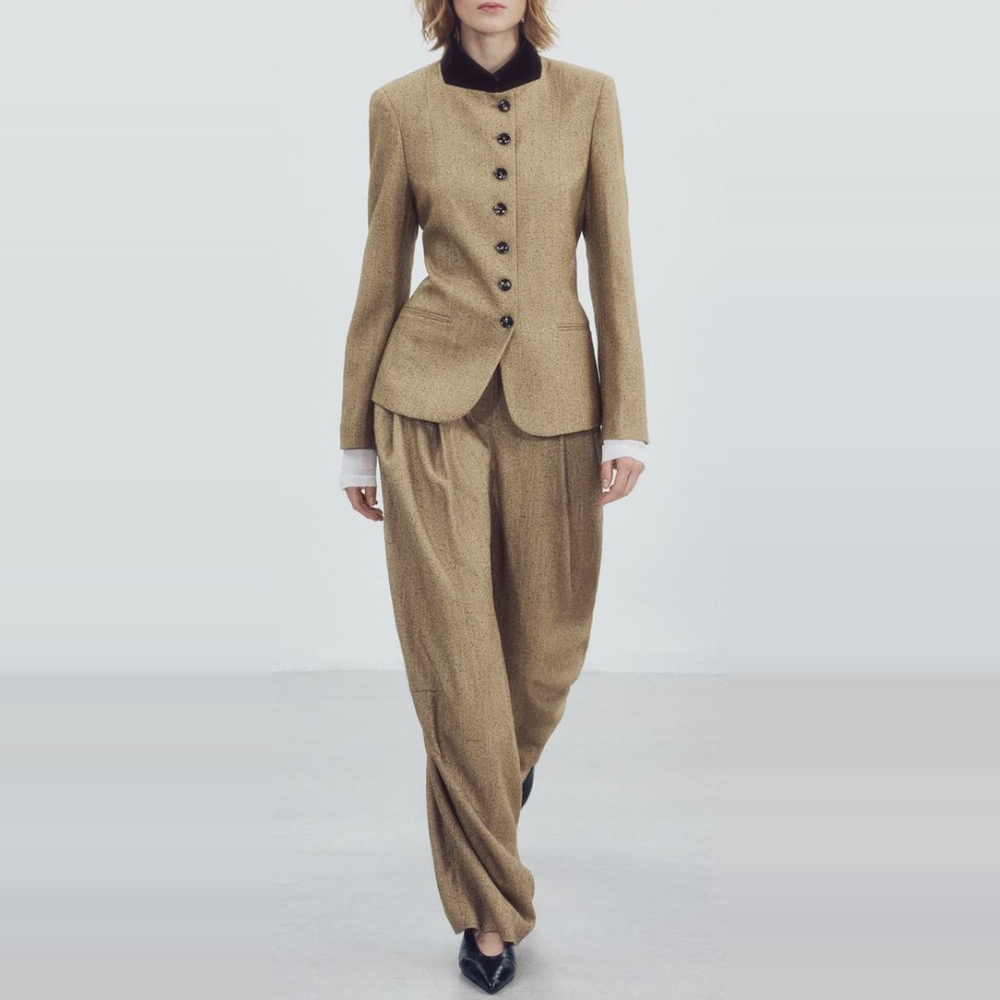
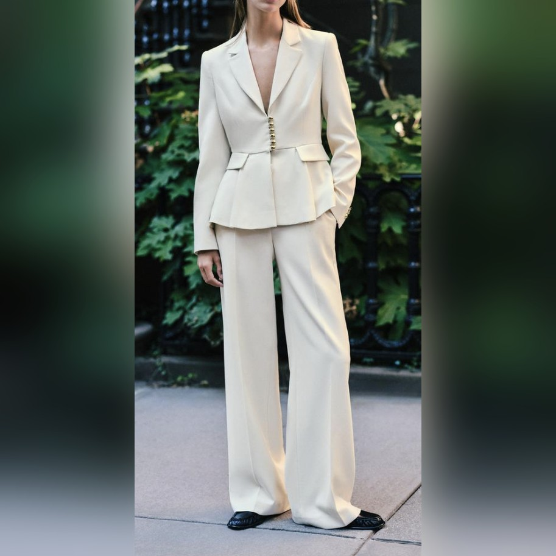
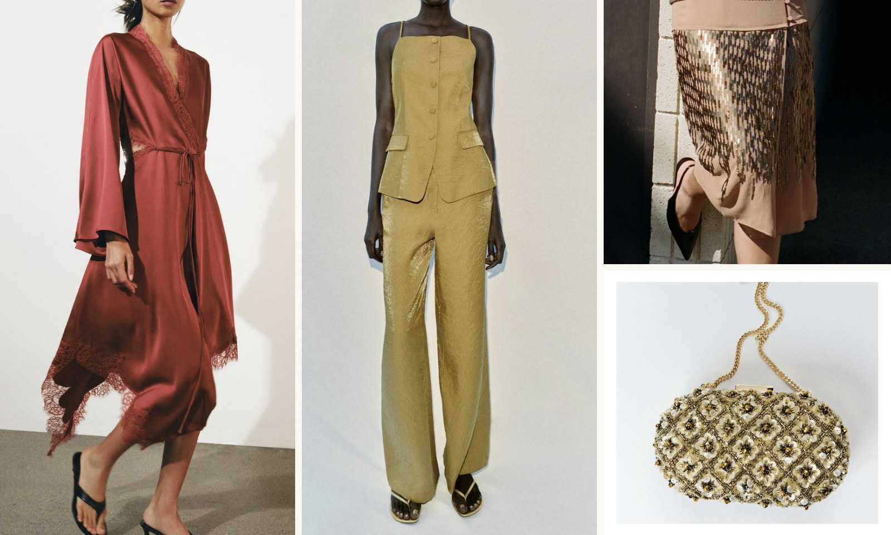

Look 01 – Tweed jacket and wide trouser

The Tweed Jacket in oatmeal, cut close through the waist and fastened high with a dark velvet collar, over the Pleated Trouser in the same cloth. A white shirt cuff at the wrist, and nothing else.
How the collections look on real people, shot twice a year.
Photographed on the roof of our workshop in Madrid in September 2026, in one afternoon, with no studio lighting. Everyone in these pictures works at JAPS or sews for us. You can buy every piece shown here in the collections page.

The Tweed Jacket in oatmeal, cut close through the waist and fastened high with a dark velvet collar, over the Pleated Trouser in the same cloth. A white shirt cuff at the wrist, and nothing else.

The Tailored Jacket in cream, nipped at the waist and left open over bare skin, with the Wide Trouser in the same cloth breaking over black loafers. The one look in this set we shot off the roof, on the street outside the workshop.
The previous season, shot in Cádiz. Some pieces are now sold out, but the shirts and trousers below are still in production and will be restocked in March.
